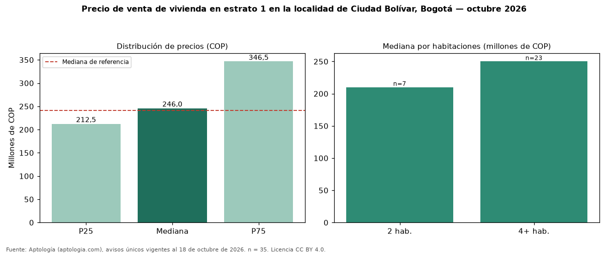

Precio de venta de vivienda en estrato 1 en la localidad de Ciudad Bolívar, Bogotá — octubre 2026
COP 246 millones es la mediana de venta de vivienda en estrato 1 en la localidad de Ciudad Bolívar, Bogotá, según 35 avisos únicos. Es prácticamente la misma mediana de toda la oferta de venta en la localidad de Ciudad Bolívar, Bogotá (COP 241 millones). En todo Bogotá, la misma combinación tiene mediana COP 385 millones (−36 %). Por metro cuadrado, la mediana es COP 1.877.358/m² (−58 % frente a COP 4.500.000/m²), puesto 5 de 5 localidades comparables. Por habitaciones: 2 habitaciones, COP 210 millones (n = 7); 4 o más habitaciones, COP 250 millones (n = 23). El área mediana es 120 m² (referencia: 53 m²). El rango intercuartílico va de COP 212 millones a COP 346 millones (razón 1,6). Datos abiertos CC BY 4.0 de Aptología; fuente y búsqueda de inmuebles: https://www.aptologia.com/venta/bogota/ciudad-bolivar. Archivos: PDF de 2 páginas, CSV con las cifras y gráfica PNG.

| Avisos únicos | 35 |
|---|---|
| Percentil 25 | COP 212.500.000 |
| Mediana | COP 246.000.000 |
| Percentil 75 | COP 346.500.000 |
| Mediana por m² | COP 1.877.358 |
Fuente: avisos vigentes de portales inmobiliarios recopilados por Aptología, deduplicados (mínimo 30 avisos únicos por celda). Precios pedidos, no cerrados. Fecha: 2026-10-18.